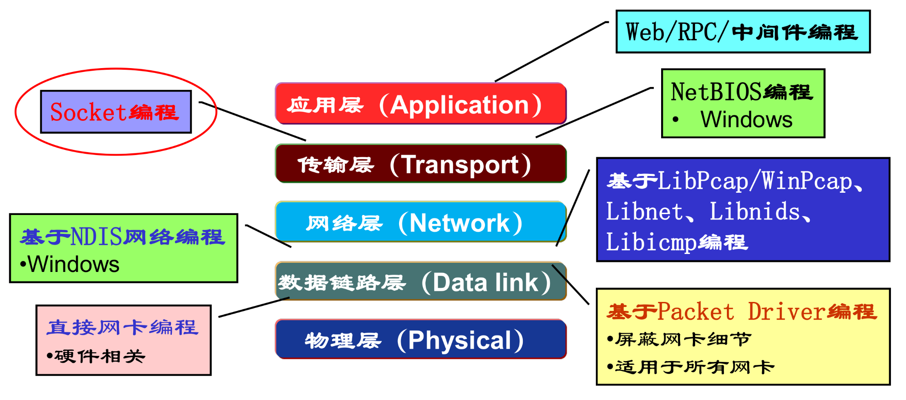

Socket编程
应用编程接口API(Application Programming Interface)，是应用进程的控制权和操作系统的控制权进行转换的一个系统调用接口。

Berkeley UNIX操作系统定义了一种API，称为套接字接口(socket interface)，简称套接字socket。
标识通信端点: IP地址+端口号
Socket API函数
- WSAStartup: 初始化socket库(仅对WinSock)
- WSACleanup：清楚/终止socket库的使用(仅对WinSock)
- socket: 创建套接字
- connect: 连接远程服务器
- closesocket: 释放/关闭套接字
- bind: 绑定套接字的本地IP地址和端口号(通常客户端不需要)
- listen: 置服务器端TCP套接字为监听模式，并设置队列大小
- accept: 接受/提取一个连接请求，创建新套接字，通过新套接
- recv: 接收数据
- recvfrom: 接收数据报
- send: 发送数据
- sendto: 发送数据报
- setsockopt: 设置套接字选项参数
- getsockopt: 获取套接字选项参数